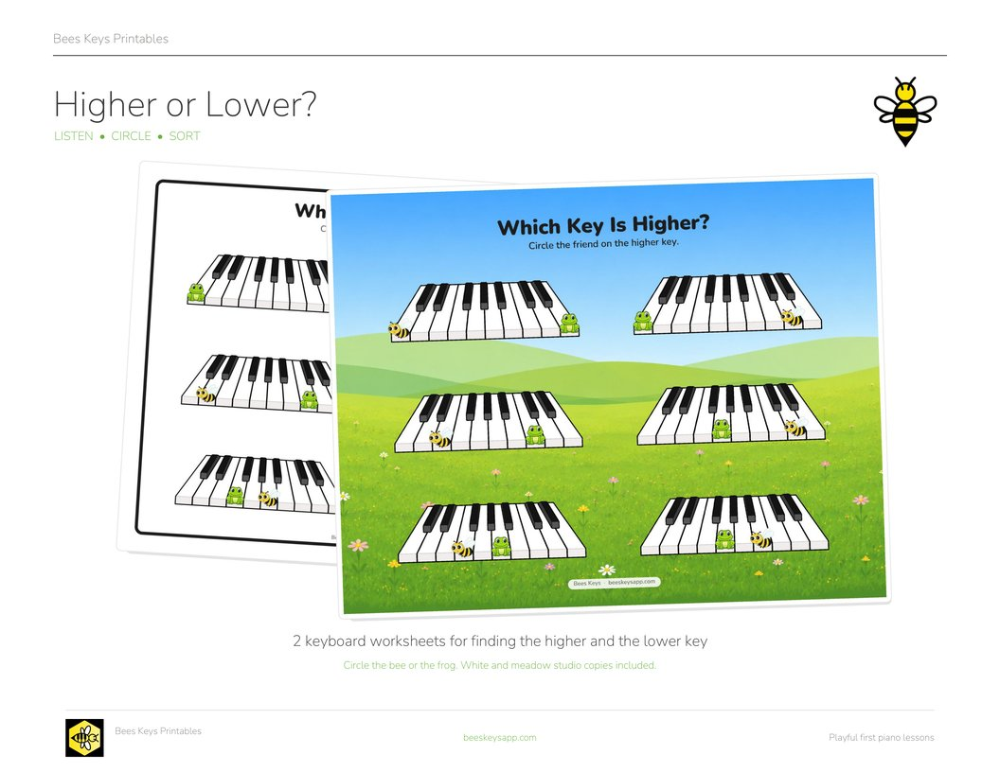
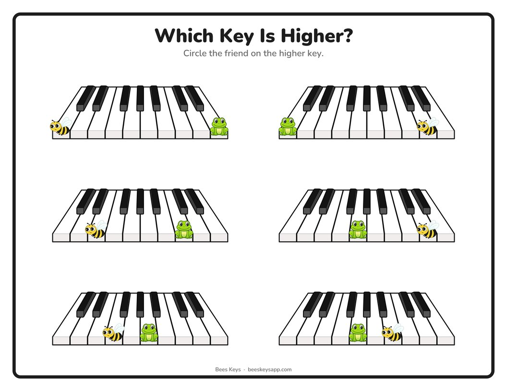
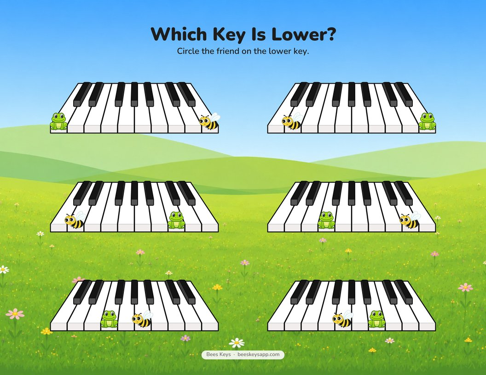

Free printable
Higher or Lower? Free High and Low Piano Worksheets
Published September 25, 2026

Click to download the free PDF“High” and “low” are some of the first ways we experience pitch, whether we’re using our voices or playing an instrument! Recognizing the difference between them is a foundational skill that helps us understand how music works.
Download the free printable
-

White pages Printer-friendly, for circling, writing, and cutting apart. -

Studio copies Both pages on the Bees Keys meadow. Laminate for dry-erase use.
A few ideas for how to use these worksheets
- Basic Worksheet: Circle the correct creature for the page: higher or lower.
- Explore: Find both keys and play them at the piano. Listen to the difference between the higher and lower sounds.
- Review Key Names: Write in the key names under the creatures.
- Cut and Sort: Cut out the individual keyboards and sort them into Bee is Higher and Frog is Higher. Reshuffle and sort again into Bee is Lower and Frog is Lower.
- Speed Round: Spread all the cut cards out and call “Bee higher!” The student grabs a matching card. Then “Frog lower!” and so on.
- Call and Point: Say “Find one where Bee is higher,” and have the student point to any correct keyboard.
- Cover the Answer: Use small tokens, erasers, or mini figures to cover the creature that is higher or lower instead of circling.
Want more free music teaching resources?
I'm making more printables, games, and teaching resources. Send me a note and I'll pass new freebies your way.
Free · unsubscribe any time Send me new freebies
Opens your mail app. Your address is only ever used to send you the free resources.